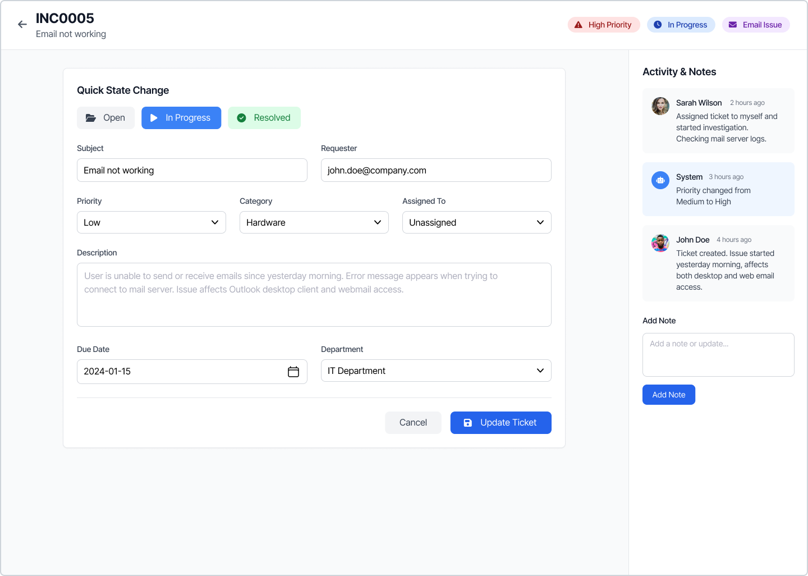

The Mini Service Desk Portal is a simple and user-friendly interface designed to help users log and track their IT-related issues efficiently. This page acts as the entry point to the service desk system.
The portal is displayed at the center of the screen within a clean and modern card layout. A light background is used to keep the interface minimal and professional, ensuring ease of use for end users.
The Enter Portal button submits the entered information and allows the user to access the service desk portal, where they can raise incidents, view requests, and track the status of their IT issues.
This page is designed to simulate a basic Service Desk login experience similar to ServiceNow portals. It focuses on simplicity, clarity, and usability, making it suitable for learning, demos, and academic projects.
The Tickets Dashboard is the main workspace of the TicketDesk application. It allows users to view, manage, and track all support tickets in one place. This page is designed with a clean layout to make ticket handling easy and efficient.
On the left side of the screen, a navigation panel is available with options such as Tickets, Reports, and About. This panel helps users quickly switch between different sections of the portal.
The main area displays the All Tickets section, where all created tickets will appear. Users can easily search and filter tickets using the search bar and dropdown filters like Priority and State.
A Create Ticket button is provided at the top-right corner of the page. This button allows users to raise a new support ticket by entering issue details. When there are no tickets available, a message is shown encouraging the user to create their first ticket.
If no tickets have been created yet, the dashboard displays a friendly message along with a Create Your First Ticket button. This helps guide new users and improves the overall user experience.
The Tickets Dashboard is designed to simulate a real-world Service Desk system similar to ServiceNow. It helps users log issues, track progress, manage requests, and collaborate efficiently within a support environment.
this the incident content page
The Create New Ticket page allows users to raise a new support request by providing detailed information about an issue or service requirement. This form is designed to collect all necessary details to ensure faster and accurate issue resolution.
The Ticket Information section contains multiple input fields where users can describe their issue clearly. Providing accurate information helps the support team understand and resolve the request efficiently.
Users can add supporting files using the Add Attachment option. The Preview feature allows users to review the ticket details before submission.
The Create Ticket button submits the ticket to the system, while the Save as Draft option allows users to store the ticket and complete it later. A Cancel option is also available to exit the form.
A help panel is displayed at the bottom of the page to assist users. It provides quick access to documentation and customer support, ensuring guidance is available whenever needed.
This page simulates a real-world IT Service Management workflow similar to ServiceNow. It helps users log incidents, track issues, and improve communication between end users and the support team.
The Incident Details page displays complete information about a specific support ticket. It allows support agents and users to view, update, and track the progress of an incident throughout its lifecycle.
At the top of the page, the incident number and short description are displayed. Status indicators such as Priority, State, and Category help users quickly understand the urgency and current progress of the incident.
The Quick State Change section allows users to easily update the status of the incident. Options such as Open, In Progress, and Resolved help manage the incident workflow efficiently.
This section contains detailed fields related to the incident, including:
The Activity & Notes panel displays a timeline of updates related to the incident. It includes system-generated updates and comments added by users or support agents. This helps maintain clear communication and transparency.
Users can add comments or updates using the Add Note section. These notes help document progress, troubleshooting steps, and resolution details.
The Update Ticket button saves any changes made to the incident, while the Cancel option allows users to discard updates and return without making changes.
This page closely resembles real-world IT Service Management systems such as ServiceNow. It supports effective incident tracking, collaboration between teams, and ensures timely resolution of IT issues.
this the reports content page
this the servicenow help content page